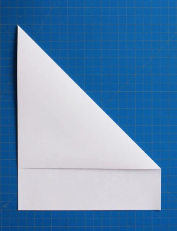
1Step 1
Bring the top-right corner down diagonally until it meets the left edge, making a sharp crease.

Bring the top-right corner down diagonally until it meets the left edge, making a sharp crease.
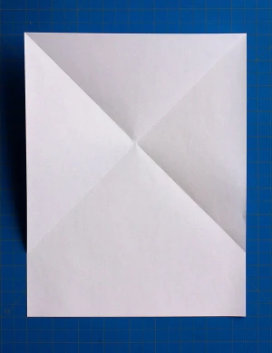
Open the sheet flat again, then mirror the same diagonal fold from the top-left corner.

Fold the top edge down so the new crease passes through the centre of the X you just made.
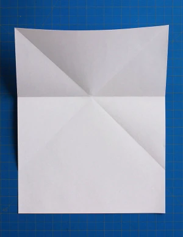
Open everything flat and smooth the sheet so only the crease marks remain.
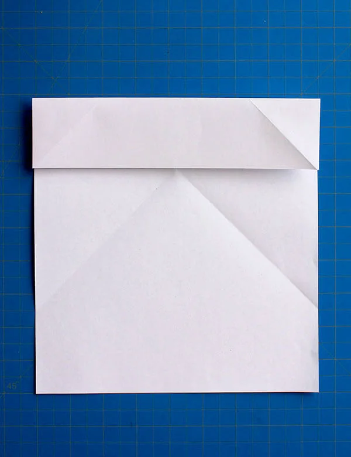
Fold the top edge down once more until it lines up with the first horizontal crease.
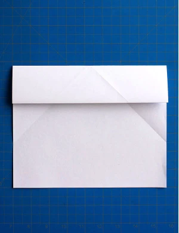
Fold that top band down again along the same horizontal crease to thicken the nose.
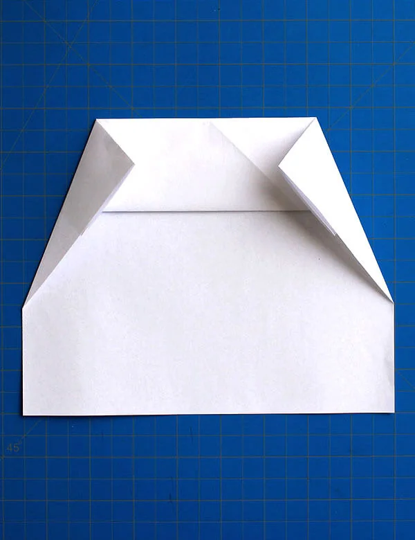
Fold each top outer edge in to meet the nearby diagonal crease, then do the same on the other side.
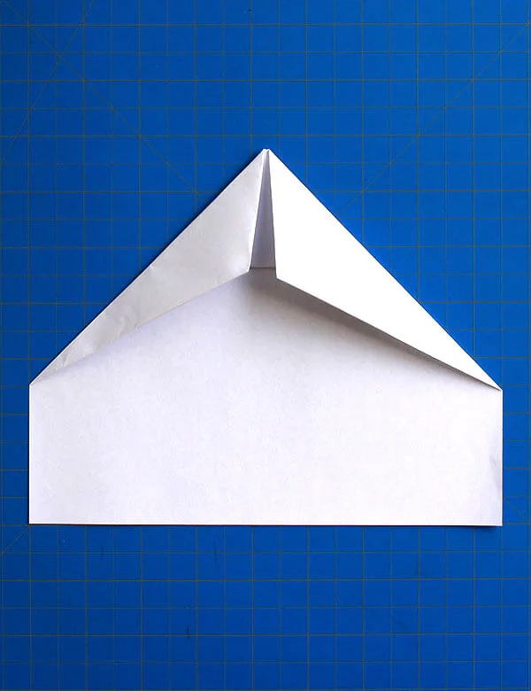
Fold both top edges along those diagonals so the sheet comes to a sharp nose point.
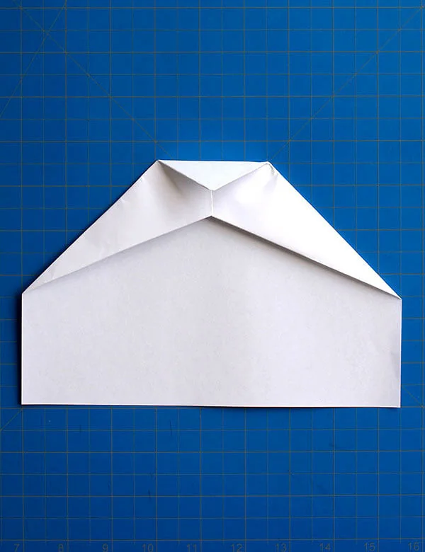
Fold the pointed tip down onto the body as shown in the diagram.
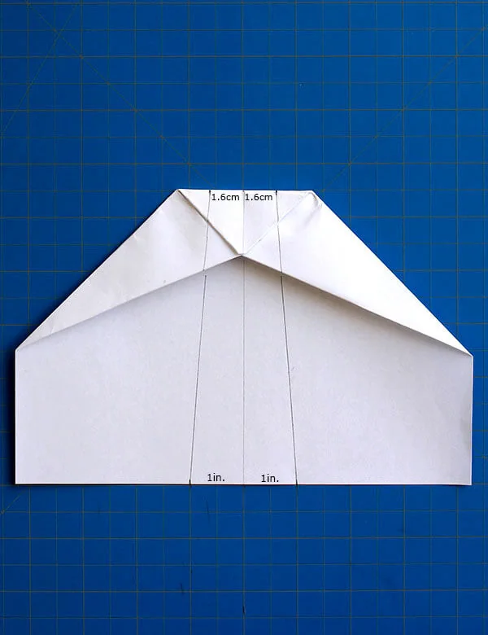
On the top edge, mark 1.6 cm left and right of centre. From the bottom centre mark 2.5 cm (1 in) up, then connect those marks to form the wing lines.
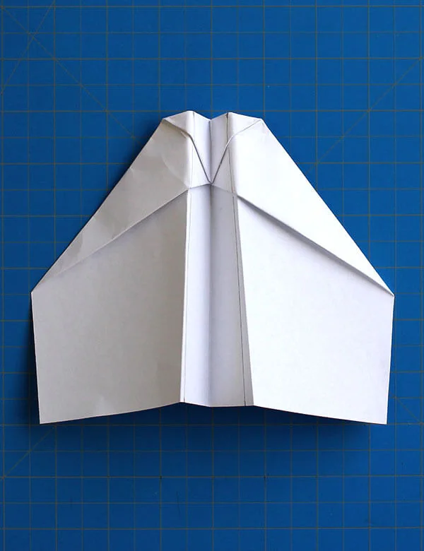
Fold the plane in half lengthwise, then fold each wing down along the measured lines.
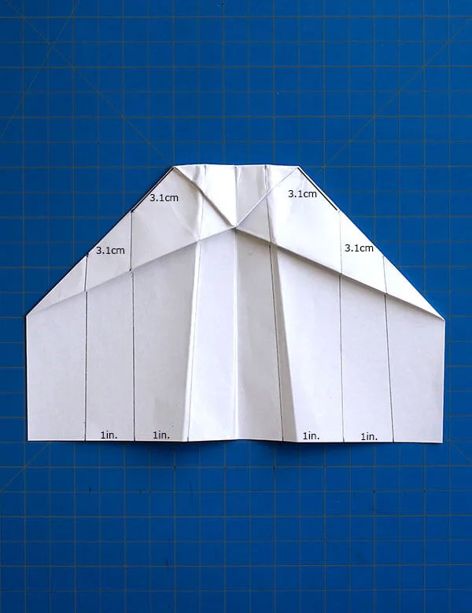
On a wing, mark 3.1 cm in from the outer top corner, then another 3.1 cm from that point. From the bottom of the vertical edge mark 2.5 cm, then another 2.5 cm, and connect for the tip accordion.
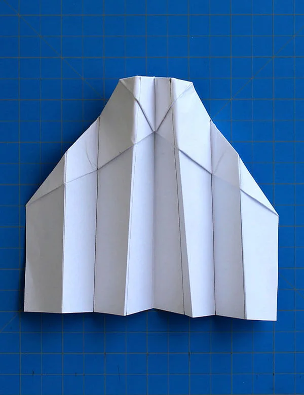
Fold along those tip lines in alternating directions so the wingtip forms an accordion / bird-wing shape. Repeat on the other wing.
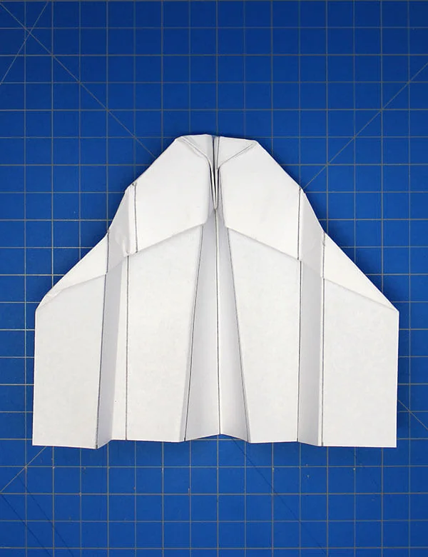
Tape the nose layers together so the front stays locked in flight.
With a calm day and a level throw, expect roughly 20–26 metres (about 66–85 feet). Among the 37 distance-rated designs in this collection it ranks #2. Wind, paper weight, and small crease errors all change the result.
A well-trimmed Wingtip Dart should hold about 5–6 seconds of hang time. That places it #16 of 36 designs for time aloft. Launching from a higher spot and keeping the wings level will extend it.
It is best for far, straight throws. Folding skill is advanced. Use Letter & A4, 14 steps, hands only.
Hold the plane level and throw with a smooth, firm push, aiming straight ahead rather than upward.